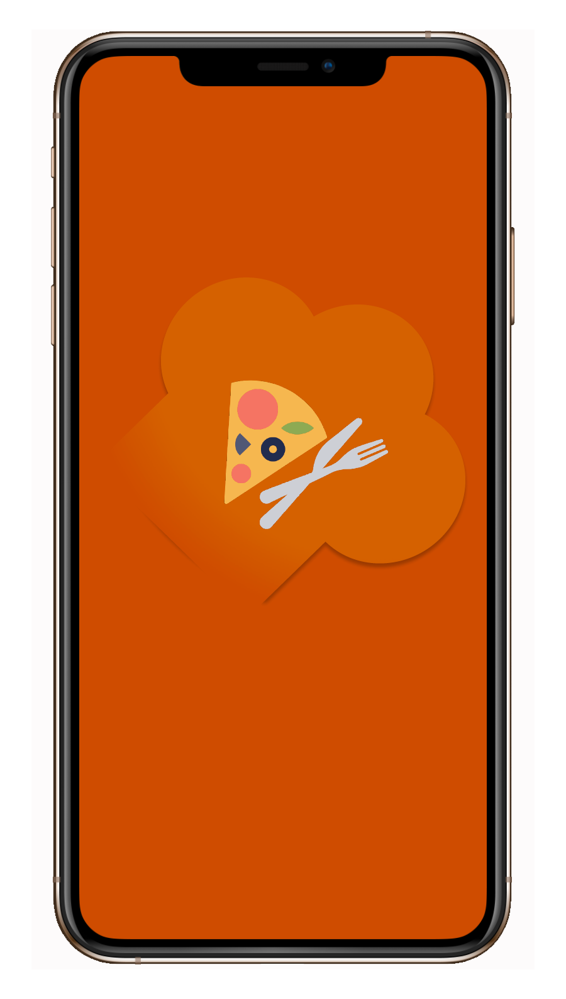
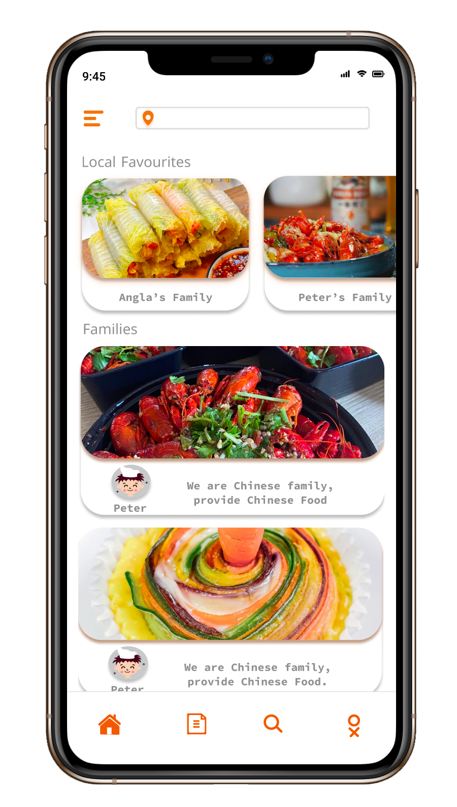
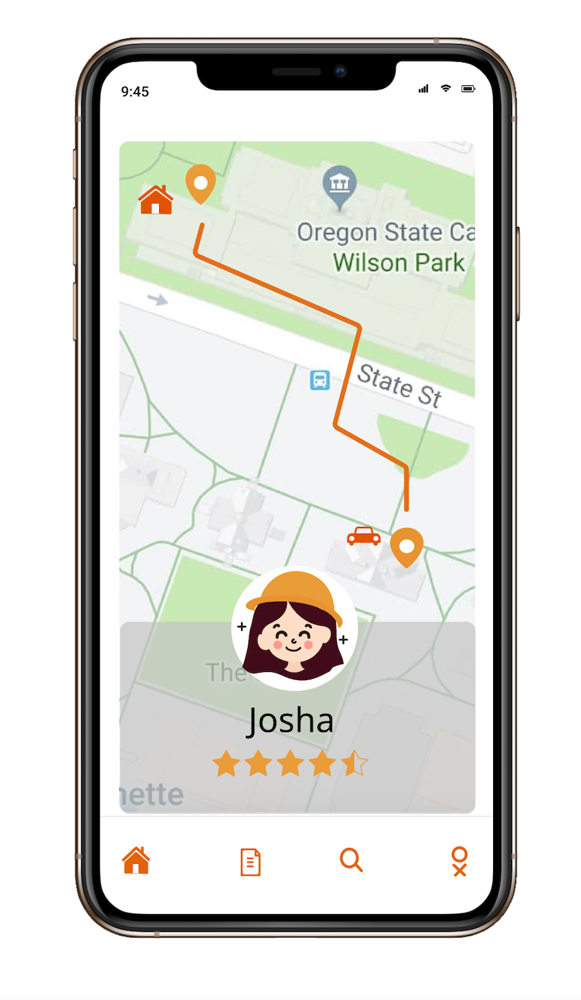

User Interface

View through user interface from menu button
(name, points, address, phone number)

DELICIOUS is a multi-platform food ordering app which helps people to order food from food carts around campus area.
Because of covid 19, many private kitchen businesses appear. People who cook very well could make a lot of portions and share them with people through some communication apps (e.g., WeChat, Facebook, Twitter, etc.) in the form of group purchases.
The idea came from the fact that since this is not systematic, there is a need for an integrated platform to bring private kitchens together and make it easy for users to browse and book different dishes for each family. The concept comes from the idea of food sharing. The idea is to make the time-consuming experience online so students can wisely use their time. With the information shared efficiently through mobile, students could also bring food for friends nearby. Everyone can try different kinds of fresh food and add color to their lives. DELICIOUS mainly focuses on data-visualization and rescources sharing.


|


|
Bin Zhang
Dalhousie Students
"I have a group meeting on Wednesday afternoon from 2 to about 3:30 and I have class from 4:00 to 6:00. I don't want to cook by myself for dinner but I always want hot Chinese cuisine at that time. I am very care about Covid-19, and I don't want to eat Pizza. I would really appreciate if someone could deliver some meal from my favourite Chinese food for me."
"We cooked many cuisines everyday, kids said they are very delicious, and they want to share with there friends who often prefer to try our hometown’s food. Because of Covid-19, the relevant restaurants are closed. The menu is ordinary but offers pretty much everything you would want from a Chinese restaurant . We provide cheap price because our aims are share hometown food to everyone and try to no waste. We run a "friendly business" by selling as many as meals we can everyday!"
Peter Li
Family Chef
Sophia
Company Manager
"I have a busy work during the day. Althougth we work at home now, I have no time to cook for myself during noon which I only have one hour to rest. I may get hungry after working a long time. I would really appreciate it if the food can preorder and provides delivery the next day service and make me have energy in the afternoon."


Fast view food carts
List three local favourite on the top
Choose to view different families' food
View through user interface from menu button
(name, points, address, phone number)
Enter into the address
Fast navigation to nearby food cart

Choose today's food menu or preorder next day's food

Online order

Driver of the delivery with star comment
Show the distance to users on the map
|   |
|  |
My biggest learning from this project was creating a product from start to finish: from conducting user research, empathize with users and chefs to defining design requirements and developing prototypes and testing them with actual users to know why things don’t work the way we think they will.
This app created for two categories: family chefs and users. Provide convenient for both of them, realized the ideate of “Sharing Food” in safety condition.
Looking back, what would I have done differently?
1. After determining the order’s receiving location, the map can navigate locations nearby which can provide services.
2. Users can reserve the meals they prefer to eat with certain families at most a week in advance and make the week's cuisines more diverse. The APP interface can display the cuisines that are provided today and Pre-order cuisines.
3. In the comments interface, families rate themselves and users rate this family, and provide a reasonable comparison. It would be a challenge for us if the app could calculate the different value between two ratings in proportion to the number of orders placed by each family, and recommend three families for users daily. In short, we need to think about how to rationalise the daily recommendations by taking into account various factors in the future.
Comment
View comments from chef self and customers